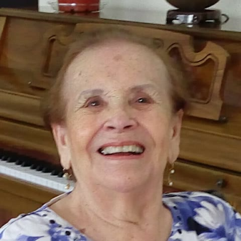

El libro de todos
Historias de Nene
Irene Vizcaíno Pelayo, 1924 a 2019. Cada domingo sale una pregunta en el grupo. Contesten con un audio cuando puedan, aunque la pregunta sea de hace meses: aquí cada voz llega a su lugar.

18
hijos, 18 ramas
En la versión real, este botón abre el grupo de WhatsApp para mandar tu audio.
Lo nuevo